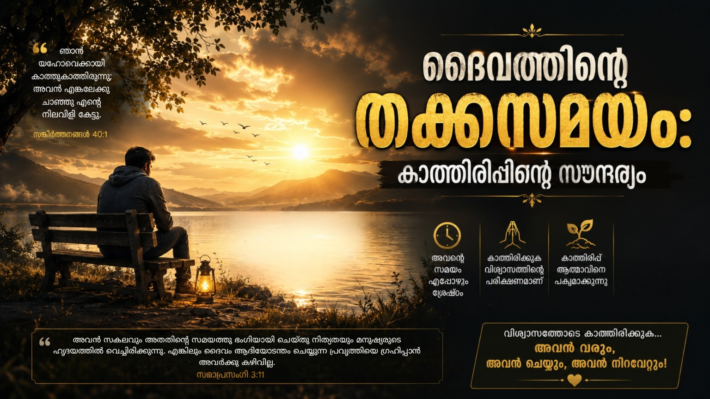

ബൈബിൾ താളുകളിലൂടെ കടന്നുപോകുമ്പോൾ നാം പലപ്പോഴും വേണ്ടത്ര ശ്രദ്ധിക്കാതെ പോകുന്ന ഒരു വലിയ സത്യമുണ്ട്—'ദൈവത്തിന്റെ തക്കസമയം'. ദൈവത്തിന്റെ സകല പ്രവൃത്തികളും പൂർണ്ണമായിരിക്കുന്നതുപോലെ, അവിടുത്തെ സമയവും തികവുള്ളതാണ് (സങ്കീർത്തനം 18:30; ഗലാത്യർ 4:4). ദൈവത്തിന്റെ സമയം ഒരിക്കലും നേരത്തെയല്ല, അതുപോലെ ഒരിക്കലും വൈകുകയുമില്ല. നമ്മുടെ ജനനത്തിനുമുമ്പ് മുതൽ നാം അവസാനത്തെ ശ്വാസമെടുക്കുന്ന നിമിഷം വരെ, പരമാധികാരിയായ ദൈവം തന്റെ ദൈവിക ഉദ്ദേശ്യങ്ങൾ നമ്മുടെ ജീവിതത്തിൽ നിറവേറ്റിക്കൊണ്ടിരിക്കുകയാണ്. എല്ലാം അവിടുത്തെ കരങ്ങളിൽ ഭദ്രമാണ്. ലോകസ്ഥാപനത്തിനുമുമ്പ് ദൈവം രൂപകല്പന ചെയ്ത ശാശ്വതമായ പദ്ധതികളുടെ സമയക്രമത്തിൽ മാറ്റം വരുത്താൻ ചരിത്രത്തിലെ ഒരു സംഭവത്തിനും കഴിഞ്ഞിട്ടില്ല എന്നതാണ് പരമാർത്ഥം.
ദൈവത്തിന്റെ സമയം മനസ്സിലാക്കാനുള്ള മറ്റൊരു താക്കോൽ 'വിശ്വാസം' ആണ്. കർത്താവിനായി കാത്തിരിക്കാനുള്ള നമ്മുടെ കഴിവ്, നാം അവനിൽ എത്രമാത്രം വിശ്വസിക്കുന്നു എന്നതിനെ ആശ്രയിച്ചിരിക്കുന്നു. നാം പൂർണ്ണഹൃദയത്തോടെ ദൈവത്തിൽ ആശ്രയിക്കുമ്പോൾ, നമ്മുടെ സ്വന്തം കഴിവിലുള്ള ആശ്രയം ഉപേക്ഷിക്കേണ്ടത് അത്യാവശ്യമാണ്. സദൃശ്യവാക്യങ്ങൾ 3:5-6 പറയുന്നു: "പൂർണ്ണഹൃദയത്തോടെ യഹോവയിൽ ആശ്രയിക്ക; സ്വന്ത വിവേകത്തിൽ ഊന്നരുതു. നിന്റെ എല്ലാ വഴികളിലും അവനെ നിനെച്ചുകൊൾക; അവൻ നിന്റെ പാതകളെ നേരെയാക്കും." സ്വന്തം ബുദ്ധിയിൽ ആശ്രയിക്കാതെ ദൈവത്തിൽ വിശ്വസിക്കുന്നവനെ അവിടുത്തെ അചഞ്ചലമായ സ്നേഹം വലയം ചെയ്യുന്നു.
നിങ്ങൾ എപ്പോഴെങ്കിലും ഒരു പ്രതിസന്ധിയിലൂടെ കടന്നുപോയിട്ടുണ്ടോ? ഒരുപക്ഷേ നിങ്ങൾ ഇപ്പോൾ അങ്ങനെയൊരു സാഹചര്യത്തിലൂടെയാകാം കടന്നുപോകുന്നത്. പ്രതിസന്ധി ഘട്ടങ്ങളിൽ എങ്ങനെ ഉറച്ചുനിൽക്കണം എന്നതിനെക്കുറിച്ച് യോഹന്നാൻ 11-ാം അധ്യായത്തിൽ നിന്നും നമുക്ക് മൂന്ന് പ്രധാന പാഠങ്ങൾ പഠിക്കാനുണ്ട്. തന്റെ പ്രിയ സ്നേഹിതനായ ലാസർ ഗുരുതരാവസ്ഥയിലാണെന്ന വിവരം യേശു അറിയുന്നു. എന്നാൽ ശിഷ്യന്മാരെപ്പോലും അത്ഭുതപ്പെടുത്തിക്കൊണ്ട്, ലാസറിനെ സൗഖ്യമാക്കാൻ യേശു ഉടനെ ഓടിച്ചെല്ലുന്നില്ല; മറിച്ച്, താൻ നിന്നിരുന്ന സ്ഥലത്ത് രണ്ടു ദിവസം കൂടി താമസിച്ചു. പിന്നീട് ലാസറിന്റെയും സഹോദരിമാരുടെയും ഭവനമായ ബെഥനിയിൽ എത്തുമ്പോഴേക്കും ലാസർ മരിച്ചിട്ട് നാല് ദിവസമായിരുന്നു എന്ന് യേശു മനസ്സിലാക്കുന്നു. ഈ സംഭവത്തിൽ നിന്നും നാം അറിഞ്ഞിരിക്കേണ്ട മൂന്ന് വിഷയങ്ങൾ താഴെ പറയുന്നവയാണ്:
ദൈവം ഒരിക്കലും നേരത്തെയല്ല, വൈകിയുമല്ല ഇടപെടുന്നത്; അവിടുന്ന് എപ്പോഴും കൃത്യസമയത്ത് എത്തും! നമ്മുടെ സമയമല്ല ദൈവത്തിന്റെ സമയം. നമ്മളെ സംബന്ധിച്ചിടത്തോളം, ദൈവത്തിന്റെ ഈ കാത്തിരിപ്പ് പലപ്പോഴും ദീർഘവും നിരാശാജനകവുമായ കാലതാമസമായി അനുഭവപ്പെട്ടേക്കാം. എന്നാൽ ഈ കാലതാമസം രണ്ട് കാര്യങ്ങൾ ചെയ്യുന്നു: ദൈവത്തിൽ പൂർണ്ണമായി ആശ്രയിക്കാൻ അത് നമ്മെ നിർബന്ധിതരാക്കുകയും, അതുവഴി നമ്മുടെ വിശ്വാസം വളർത്തുകയും ചെയ്യുന്നു. "എന്റെ കാലഗതികൾ നിന്റെ കയ്യിൽ ഇരിക്കുന്നു" (സങ്കീർത്തനം 31:15). തക്കസമയത്ത് ദൈവം നിങ്ങളുടെ വിഷയങ്ങൾക്ക് മറുപടി നൽകും. തക്കസമയത്ത് അവിടുന്ന് നിങ്ങളെ വിടുവിക്കുകയും രക്ഷിക്കുകയും ചെയ്യും.
"എന്റെ വിചാരങ്ങൾ നിങ്ങളുടെ വിചാരങ്ങൾ അല്ല; നിങ്ങളുടെ വഴികൾ എന്റെ വഴികളുമല്ല എന്നു യഹോവ അരുളിച്ചെയ്യുന്നു. ആകാശം ഭൂമിക്കുമീതെ ഉയർന്നിരിക്കുന്നതുപോലെ എന്റെ വഴികൾ നിങ്ങളുടെ വഴികളിലും എന്റെ വിചാരങ്ങൾ നിങ്ങളുടെ വിചാരങ്ങളിലും ഉയർന്നിരിക്കുന്നു" (യെശയ്യാ 55:8,9). ദൈവത്തിന് എപ്പോഴും ശാശ്വതമായ ഒരു കാഴ്ചപ്പാടുണ്ട്. ഭൂതവും വർത്തമാനവും ഭാവിയും അറിയുന്ന മഹാനായ 'യഹോവ' ആണ് നമ്മുടെ ദൈവം. അവിടുത്തോട് താരതമ്യം ചെയ്യുമ്പോൾ നമുക്കെന്തറിയാം? യഥാർത്ഥത്തിൽ ഒന്നുമറിയില്ല. ഈ കാലതാമസത്തിലൂടെ ശിഷ്യന്മാരുടെ വിശ്വാസം വർദ്ധിപ്പിക്കാനാണ് യേശു ആഗ്രഹിച്ചത്. രോഗികളെ സൗഖ്യമാക്കാൻ യേശുവിന് ശക്തിയുണ്ടെന്ന് അവർക്കറിയാമായിരുന്നു. എന്നാൽ മരിച്ച് നാല് ദിവസമായ ഒരു ജീർണ്ണിച്ച മൃതദേഹത്തെ ഉയിർപ്പിക്കാൻ കഴിയുമെന്ന് അവർ അറിഞ്ഞിരുന്നില്ല. ആ അത്ഭുതം അവരുടെ വിശ്വാസത്തെ പുതിയൊരു തലത്തിലേക്ക് കൊണ്ടുപോയി. ദൈവത്തിന്റെ വഴികൾ നിങ്ങളുടേതല്ലെന്ന് തിരിച്ചറിയുക മാത്രമല്ല, ആ വഴികളിൽ നിങ്ങളുടെ പൂർണ്ണ വിശ്വാസം അർപ്പിക്കുക കൂടി വേണം.
സാഹചര്യങ്ങൾ എത്ര ഭയാനകവും അസാധ്യവുമാണെന്ന് തോന്നിയാലും, ഇനി യാതൊരു പ്രത്യാശയോ ഉത്തരമോ ഇല്ലെന്ന് കരുതിയാലും, ദൈവം നിങ്ങളെ വഴിനടത്തും. കാരണം, അന്തിമ വാക്ക് കർത്താവിന്റേത് മാത്രമാണ്! പലപ്പോഴും ദൈവം മറുപടി വൈകിപ്പിക്കുന്ന കാലഘട്ടങ്ങളിൽ 'എല്ലാം അവസാനിച്ചു' എന്ന് നാം ചിന്തിച്ചേക്കാം. നമ്മുടെ വിവാഹജീവിതം, കുടുംബം, ജോലി, ആരോഗ്യം, ഭാവി എന്നിവയെല്ലാം തകർന്നു എന്ന് നാം കരുതിയേക്കാം. എന്നാൽ ദൈവം ഇതിനെല്ലാം ഒരു അവധി നിർണ്ണയിച്ചിട്ടുണ്ട്; ഒന്നും അവസാനിച്ചിട്ടില്ല, മറിച്ച് ദൈവത്തിന്റെ തക്കസമയം ആകുന്നതേയുള്ളൂ.
ആ കല്ലറയിൽ ലാസർ മരിച്ച് നാല് ദിവസം കിടന്ന് ജീർണ്ണിച്ചു. പക്ഷേ, അത് അവിടെ അവസാനിച്ചില്ല! യേശു ലാസറിനെ മരിച്ചവരിൽ നിന്ന് ഉയിർപ്പിച്ചു. അവന്റെ അവയവങ്ങൾ വീണ്ടും പ്രവർത്തിച്ചു, അഴുകിയ ചർമ്മം പുതിയതായി മാറി—അതൊരു വലിയ അത്ഭുതമായിരുന്നു! ഇതുപോലെ തന്നെ ഏതൊരു മരണാവസ്ഥയിൽ നിന്നും ദൈവം നമ്മെ ഉദ്ധരിക്കും. കഷ്ടിച്ച് അതിജീവിക്കാൻ മാത്രമല്ല, പൂർണ്ണവിജയം വരിക്കാൻ ദൈവം നമ്മെ സഹായിക്കും. എല്ലാത്തിനും അതിന്റേതായ ഒരു സമയം ദൈവം നിർണ്ണയിച്ചിട്ടുണ്ട്. അതിനാൽ, പിറുപിറുപ്പില്ലാതെ ആ തക്കസമയത്തിനായി കാത്തിരിക്കുക. ഒന്നുമാത്രം എപ്പോഴും ഓർക്കുക: അവിടുന്ന് നമ്മെ അതിരറ്റ് സ്നേഹിക്കുന്നു.
Br Jineesh Punalur